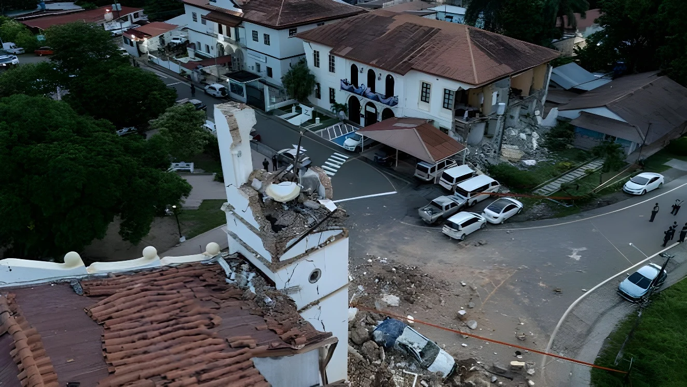

Le vendredi 9 octobre 2026, à 12 h 56 heure locale, un séisme de magnitude 7,7 selon l'USGS américain a secoué le centre-sud du Panama, avec un épicentre à une dizaine de kilomètres de la localité de Pitaloza Arriba. Une alerte au tsunami, levée en moins de deux heures, a été émise pour le Pacifique oriental. Selon le bilan préliminaire du 10 octobre, 27 personnes ont été légèrement blessées, plus de 400 constructions ont été endommagées et aucun décès n'a été signalé. Le président José Raúl Mulino a parlé d'un « grand désastre » tout en appelant au calme.
Le vendredi 9 octobre 2026, à 12 h 56 heure locale (17 h 56 GMT), un séisme de magnitude 7,7 selon l'USGS a frappé le Panama. Son épicentre se situait à environ 10 à 12 kilomètres à l'ouest-sud-ouest de Pitaloza Arriba, dans la province de Herrera, près de Tonosí, sur la péninsule d'Azuero, à environ 200 kilomètres de la capitale. L'USGS avait d'abord estimé la magnitude à 8,0 avant de la réviser à la baisse, et le foyer est peu profond, à environ 10 kilomètres, ce qui accentue les secousses en surface. Panama a été secouée, de même que des régions voisines de la Colombie.
Dans la capitale, où aucun dommage n'a été signalé, des habitants ont fui en courant les immeubles de grande hauteur. L'aéroport international a été fermé un temps et des vols ont été déroutés, mais l'Autorité du canal a indiqué que le trafic maritime n'était pas affecté, comme nous le racontions à propos du canal.
Le directeur de l'Institut de géosciences, Néstor Luque, attribue le séisme au système de failles Azuero-Soná, un ensemble de failles crustales actives. Les estimations de magnitude varient : le centre d'alerte aux tsunamis du Pacifique parlait de 7,6, et l'institut panaméen aurait ramené la valeur à 7,5. Selon l'USGS, environ 36 000 personnes ont subi une secousse « sévère », 538 000 une secousse « très forte » et 842 000 une secousse « forte ». Les constructions vulnérables, en briques non armées et en adobe, dominent dans la région.
| Source | Magnitude |
|---|---|
| USGS (version retenue) | 7,7 |
| Centre d'alerte tsunami du Pacifique | 7,6 |
| Institut de géosciences du Panama | 7,5 |
| USGS (première estimation) | 8,0 |
Le centre d'alerte aux tsunamis du Pacifique a émis une alerte pour le Pacifique oriental, avec des vagues de 1 à 3 mètres possibles au Panama et de 0,3 à 1 mètre en Équateur, puis moins de 0,3 mètre. La menace a été levée à 19 h 40 GMT, soit moins de deux heures après la secousse principale. Aucune vague destructrice n'a été signalée.
L'Institut de géosciences a recensé plus d'une centaine de répliques, l'AFP en comptant plus de 80 dès la soirée. Parmi les plus fortes, une secousse de magnitude 5,5 à 13 h 22 locales, une de 5,8 près d'El Cacao, puis une de 6,6 près de Río Grande, suivies d'une de 5,4 et, le 10 octobre au matin, d'une de 6,0.
Réplique de magnitude 6,0 (04 h 14 GMT).
Réplique de magnitude 6,6 près de Río Grande.
Fin de l'alerte au tsunami.
Première alerte au tsunami pour le Pacifique oriental.
Séisme principal de magnitude 7,7.
Séisme de Limón, magnitude 7,7, aux confins du Costa Rica et du Panama : 127 morts.
Les dégâts concernent surtout les provinces de Los Santos, de Herrera, de Veraguas et de Coclé. À Penonomé, la cathédrale San Juan Bautista a été endommagée et la façade d'un hôtel est tombée sur une voiture. À Soná, la maison de l'ancien président Ricardo Martinelli s'est effondrée. Selon le ministre de la Santé, Fernando Boyd, la localité de Tonosí, la plus proche de l'épicentre, a été complètement coupée du monde. Cinq communautés restent isolées par des ponts endommagés, des routes coupées et des glissements de terrain, et environ 300 personnes ont été évacuées à titre préventif dans la province de Los Santos.
« Ce qui s'est passé ne doit pas servir à provoquer alarme ou désordre. »
— José Raúl Mulino, président du Panama, 9 octobre 2026 (traduction)| Bilan préliminaire des dégâts | Nombre |
|---|---|
| Écoles | 188 |
| Logements | 142 |
| Bâtiments publics | 26 |
| Établissements de santé | 20 |
| Églises | 13 |
| Hôtels | 7 |
Le chef du centre d'opérations d'urgence, René García, a indiqué qu'aucun décès n'était signalé « jusqu'à présent ». Les 27 blessés présentent des lésions légères, dont 17 dans la province de Coclé et six à Los Santos. Les écoles et les administrations ont suspendu leurs activités dans tout le pays. Presque toutes les stations de traitement d'eau potable ont subi des effets structurels, et celle de Federico Guardia Conte fonctionnait à environ 20 % de sa capacité. Ces chiffres sont préliminaires et peuvent évoluer.
Le Système national de protection civile (Sinaproc) n'envisageait pas, à ce stade, de demander une aide internationale. Le secrétaire d'État américain, Marco Rubio, a pourtant déclaré que les États-Unis « se tiennent aux côtés du peuple panaméen » et que son département mobilisait des ressources à la demande de Panama. Les dirigeants de la Colombie, de l'Équateur et du Guatemala ont proposé leur aide.
Le dernier séisme comparable dans la région est celui de Limón, le 22 avril 1991 : de magnitude 7,7 aussi, il avait fait 127 morts, dont 79 dans la province panaméenne de Bocas del Toro, déclenché un tsunami d'environ trois mètres et soulevé la côte de 1,85 mètre. Cette comparaison rappelle que l'absence de victimes, en 2026, tient aussi à la profondeur et à la localisation du foyer, dans une zone peu densément peuplée.
Entre 8,0, 7,7, 7,6 et 7,5, le même événement a reçu quatre magnitudes en une journée : l'estimation d'un séisme s'affine à mesure que les stations livrent leurs données, et la presse en retient d'abord la première. Le bilan humain suit la même logique, avec un décompte provisoire de 27 blessés qui pourra changer quand les communautés isolées auront été atteintes.
L'absence de mort ne dit donc pas encore l'ampleur de la catastrophe : plus de 400 bâtiments, des écoles, des hôpitaux et des stations d'eau touchés indiquent un coût de reconstruction élevé pour un pays où l'adobe et la brique non armée restent répandus. La vraie mesure sera la rapidité de la remise en état et la capacité à renforcer les constructions avant la prochaine secousse.
El viernes 9 de octubre de 2026, a las 12:56 hora local, un terremoto de magnitud 7,7 según el USGS estadounidense sacudió el centro-sur de Panamá, con epicentro a unos diez kilómetros de la localidad de Pitaloza Arriba. Se emitió una alerta de tsunami para el Pacífico oriental, levantada en menos de dos horas. Según el balance preliminar del 10 de octubre, 27 personas resultaron levemente heridas, más de 400 construcciones sufrieron daños y no se ha reportado ningún fallecido. El presidente José Raúl Mulino habló de «un gran desastre» y pidió calma.
El viernes 9 de octubre de 2026, a las 12:56 hora local (17:56 GMT), un terremoto de magnitud 7,7 según el USGS golpeó Panamá. Su epicentro estaba a unos 10 o 12 kilómetros al oeste-suroeste de Pitaloza Arriba, en la provincia de Herrera, cerca de Tonosí, en la península de Azuero, a unos 200 kilómetros de la capital. El USGS había estimado primero una magnitud de 8,0 antes de revisarla a la baja, y el foco es superficial, a unos 10 kilómetros, lo que acentúa las sacudidas en la superficie. El temblor se sintió también en regiones vecinas de Colombia.
En la capital, donde no se reportaron daños, los habitantes huyeron corriendo de los edificios altos. El aeropuerto internacional cerró temporalmente y varios vuelos fueron desviados, pero la Autoridad del Canal indicó que el tráfico marítimo no se vio afectado, tema del canal que tratamos en otro artículo.
El director del Instituto de Geociencias, Néstor Luque, atribuye el sismo al sistema de fallas Azuero-Soná, un conjunto de fallas corticales activas. Las estimaciones de magnitud varían: el Centro de Alerta de Tsunamis del Pacífico hablaba de 7,6, y el instituto panameño habría rebajado el valor a 7,5. Según el USGS, unas 36 000 personas sintieron una sacudida «severa», 538 000 una «muy fuerte» y 842 000 una «fuerte». Predominan en la zona las construcciones vulnerables, de ladrillo sin reforzar y adobe.
| Fuente | Magnitud |
|---|---|
| USGS (versión retenida) | 7,7 |
| Centro de Alerta de Tsunamis del Pacífico | 7,6 |
| Instituto de Geociencias de Panamá | 7,5 |
| USGS (primera estimación) | 8,0 |
El Centro de Alerta de Tsunamis del Pacífico emitió una alerta para el Pacífico oriental, con olas de 1 a 3 metros posibles en Panamá y de 0,3 a 1 metro en Ecuador, luego menos de 0,3 metros. La amenaza se levantó a las 19:40 GMT, menos de dos horas después del sismo principal. No se reportaron olas destructivas.
El Instituto de Geociencias ha contabilizado más de un centenar de réplicas, y la AFP más de 80 desde la tarde. Entre las más fuertes figuran una de magnitud 5,5 a las 13:22 locales, otra de 5,8 cerca de El Cacao, una de 6,6 cerca de Río Grande, seguidas de una de 5,4 y, la mañana del 10 de octubre, de una de 6,0.
Réplica de magnitud 6,0 (04:14 GMT).
Réplica de magnitud 6,6 cerca de Río Grande.
Fin de la alerta de tsunami.
Primera alerta de tsunami para el Pacífico oriental.
Sismo principal de magnitud 7,7.
Terremoto de Limón, magnitud 7,7, en la frontera entre Costa Rica y Panamá: 127 muertos.
Los daños afectan sobre todo a las provincias de Los Santos, Herrera, Veraguas y Coclé. En Penonomé, la catedral San Juan Bautista resultó dañada y la fachada de un hotel cayó sobre un automóvil. En Soná, se derrumbó la casa del expresidente Ricardo Martinelli. Según el ministro de Salud, Fernando Boyd, la localidad de Tonosí, la más cercana al epicentro, quedó completamente incomunicada. Cinco comunidades siguen aisladas por puentes dañados, carreteras cortadas y deslizamientos de tierra, y unas 300 personas fueron evacuadas de forma preventiva en la provincia de Los Santos.
«Lo ocurrido no debe usarse para provocar alarma ni desorden.»
— José Raúl Mulino, presidente de Panamá, 9 de octubre de 2026| Balance preliminar de daños | Número |
|---|---|
| Escuelas | 188 |
| Viviendas | 142 |
| Edificios públicos | 26 |
| Instalaciones de salud | 20 |
| Iglesias | 13 |
| Hoteles | 7 |
El jefe del Centro de Operaciones de Emergencia, René García, indicó que «hasta el momento» no hay reportes de víctimas fatales. Los 27 heridos presentan lesiones leves: 17 en la provincia de Coclé y seis en Los Santos. Las escuelas y las oficinas administrativas suspendieron sus actividades en todo el país. Casi todas las plantas potabilizadoras sufrieron efectos estructurales, y la de Federico Guardia Conte operaba a cerca del 20 % de su capacidad. Estas cifras son preliminares y pueden cambiar.
El Sistema Nacional de Protección Civil (Sinaproc) no contemplaba, por ahora, solicitar ayuda internacional. El secretario de Estado estadounidense, Marco Rubio, afirmó sin embargo que Estados Unidos «está con el pueblo de Panamá» y que su departamento movilizaba recursos a petición de Panamá. Los gobernantes de Colombia, Ecuador y Guatemala ofrecieron su ayuda.
El último terremoto comparable en la región es el de Limón, el 22 de abril de 1991: también de magnitud 7,7, causó 127 muertos, 79 de ellos en la provincia panameña de Bocas del Toro, provocó un tsunami de unos tres metros y elevó la costa 1,85 metros. La comparación recuerda que la ausencia de víctimas en 2026 también se explica por la profundidad y la ubicación del foco, en una zona poco densamente poblada.
Entre 8,0, 7,7, 7,6 y 7,5, el mismo suceso recibió cuatro magnitudes en un día: la estimación de un sismo se afina a medida que las estaciones entregan sus datos, y la prensa retiene primero la inicial. El balance humano sigue la misma lógica, con un recuento provisional de 27 heridos que podrá cambiar cuando se llegue a las comunidades aisladas.
La ausencia de muertos no dice, pues, el alcance de la catástrofe: más de 400 edificaciones, escuelas, hospitales y plantas de agua afectadas indican un alto costo de reconstrucción para un país donde el adobe y el ladrillo sin reforzar siguen extendidos. La verdadera medida será la rapidez de la rehabilitación y la capacidad de reforzar las construcciones antes del próximo temblor.